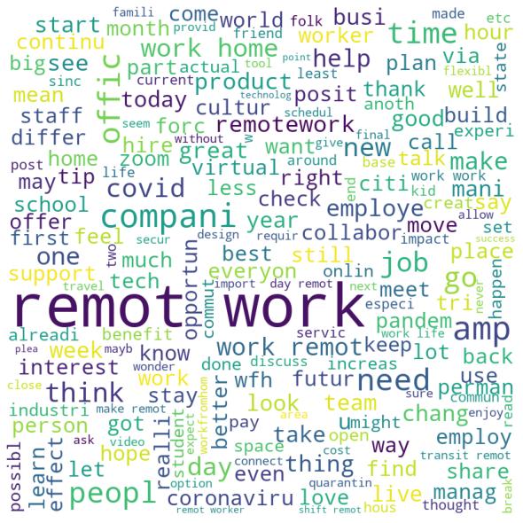

import nltk
import re
from string import digits
import pandas as pd# read twitter data witk keyword remote work
df = pd.read_csv('remote_work_2020.csv').drop(columns = ['Unnamed: 0', 'states'], axis = 1)
df.head()| author_id | username | author_followers | author_tweets | author_description | author_location | text | created_at | geo_id | retweets | replies | likes | quote_count | geo_name | states_abbrev | |
|---|---|---|---|---|---|---|---|---|---|---|---|---|---|---|---|
| 0 | 161245760 | andreaisawriter | 5530 | 18741 | üìÉ Professional Resume Building Course OUT NOW,... | The Ocean üåä | @MorsVitaEst @punkspaceship You know anybody w... | 2020-12-30 15:08:43+00:00 | 9531d4e3bbafc09d | 0 | 0 | 0 | 0 | Oklahoma City, OK | OK |
| 1 | 726646610 | ELPfan | 1089 | 24941 | St. Louis Cardinals fan for decades... Tech sa... | Sacramento, CA | Businesses to boost collaboration spending in ... | 2020-12-30 13:53:46+00:00 | b90f2a335f8565c0 | 0 | 0 | 1 | 0 | Arden-Arcade, CA | CA |
| 2 | 46131692 | Harben_eco_dev | 916 | 30554 | Econ dev pro. Now working with business as a t... | Prince William County, VA | Something to consider. Remote work has a dark... | 2020-12-30 13:50:08+00:00 | 00d7e2736bc1e7dc | 0 | 0 | 0 | 0 | County Center, VA | VA |
| 3 | 71903 | thorpus | 6181 | 63494 | Husband to @LaurenEThorp, Dad to Miles & Elois... | St Louis, MO | Progress...\n\n“Headquarters aren’t going away... | 2020-12-30 13:02:01+00:00 | 0570f015c264cbd9 | 0 | 0 | 0 | 0 | St Louis, MO | MO |
| 4 | 2835431183 | docmosho | 8779 | 16983 | Physician Executive üë®üèæ‚Äçüíª focused on making hea... | New Orleans, LA | This vaccine roll out y‚Äôall...\n\nYou would th... | 2020-12-30 12:52:45+00:00 | dd3b100831dd1763 | 1 | 0 | 1 | 0 | New Orleans, LA | LA |
# look at data type
df.info()<class 'pandas.core.frame.DataFrame'>
RangeIndex: 4070 entries, 0 to 4069
Data columns (total 15 columns):
# Column Non-Null Count Dtype
--- ------ -------------- -----
0 author_id 4070 non-null int64
1 username 4070 non-null object
2 author_followers 4070 non-null int64
3 author_tweets 4070 non-null int64
4 author_description 3953 non-null object
5 author_location 3836 non-null object
6 text 4070 non-null object
7 created_at 4070 non-null object
8 geo_id 4070 non-null object
9 retweets 4070 non-null int64
10 replies 4070 non-null int64
11 likes 4070 non-null int64
12 quote_count 4070 non-null int64
13 geo_name 4070 non-null object
14 states_abbrev 3980 non-null object
dtypes: int64(7), object(8)
memory usage: 477.1+ KBimport string
string.punctuation
def clean_text(text):
'''
text cleaning, remove numbers, url, punctuation, newline, special characters
'''
text = text.lower()
text = ''.join([i for i in text if not i.isdigit()])
text = re.sub('\[.*?\]', '', text)
text = re.sub('https?://\S+|www\.\S+', '', text)
text = re.sub('<.*?>+', '', text)
text = re.sub('[%s]' % re.escape(string.punctuation), ' ', text)
text = re.sub('\n', '', text)
tweet = re.sub('\w*\d\w*', '', text)
clean_text = re.sub("@[A-Za-z0-9_]+","", tweet)
clean_text = re.sub("#[A-Za-z0-9_]+","", clean_text)
clean_text = re.sub(r'http\S+', '', clean_text)
return clean_text
def text_preprocessing(text):
'''
preprocessing text
'''
tokenizer = nltk.tokenize.RegexpTokenizer(r'\w+')
nopunct = clean_text(text)
tokenized_text = tokenizer.tokenize(nopunct)
combined_text = ' '.join(tokenized_text)
return combined_textdf['clean_text'] = df['text'].apply(lambda x: text_preprocessing(x))import nltk
nltk.download('stopwords')
from nltk.corpus import stopwords
STOPWORDS = set(stopwords.words('english'))
def remove_stopwords(text):
"""custom function to remove the stopwords"""
return " ".join([word for word in str(text).split() if word not in STOPWORDS])
df['clean_text'] = df['clean_text'].apply(lambda x: remove_stopwords(x))[nltk_data] Downloading package stopwords to
[nltk_data] /Users/yanshi/nltk_data...
[nltk_data] Package stopwords is already up-to-date!from nltk.stem.porter import PorterStemmer
stemmer = PorterStemmer()
def stem_words(text):
return " ".join([stemmer.stem(word) for word in text.split()])
df['clean_text'] = df['clean_text'].apply(lambda x: stem_words(x))df.head()| author_id | username | author_followers | author_tweets | author_description | author_location | text | created_at | geo_id | retweets | replies | likes | quote_count | geo_name | states_abbrev | clean_text | |
|---|---|---|---|---|---|---|---|---|---|---|---|---|---|---|---|---|
| 0 | 161245760 | andreaisawriter | 5530 | 18741 | üìÉ Professional Resume Building Course OUT NOW,... | The Ocean üåä | @MorsVitaEst @punkspaceship You know anybody w... | 2020-12-30 15:08:43+00:00 | 9531d4e3bbafc09d | 0 | 0 | 0 | 0 | Oklahoma City, OK | OK | morsvitaest punkspaceship know anybodi need ne... |
| 1 | 726646610 | ELPfan | 1089 | 24941 | St. Louis Cardinals fan for decades... Tech sa... | Sacramento, CA | Businesses to boost collaboration spending in ... | 2020-12-30 13:53:46+00:00 | b90f2a335f8565c0 | 0 | 0 | 1 | 0 | Arden-Arcade, CA | CA | busi boost collabor spend remot work continu v... |
| 2 | 46131692 | Harben_eco_dev | 916 | 30554 | Econ dev pro. Now working with business as a t... | Prince William County, VA | Something to consider. Remote work has a dark... | 2020-12-30 13:50:08+00:00 | 00d7e2736bc1e7dc | 0 | 0 | 0 | 0 | County Center, VA | VA | someth consid remot work dark side way make su... |
| 3 | 71903 | thorpus | 6181 | 63494 | Husband to @LaurenEThorp, Dad to Miles & Elois... | St Louis, MO | Progress...\n\n“Headquarters aren’t going away... | 2020-12-30 13:02:01+00:00 | 0570f015c264cbd9 | 0 | 0 | 0 | 0 | St Louis, MO | MO | progress headquart go away compani embrac hub ... |
| 4 | 2835431183 | docmosho | 8779 | 16983 | Physician Executive üë®üèæ‚Äçüíª focused on making hea... | New Orleans, LA | This vaccine roll out y‚Äôall...\n\nYou would th... | 2020-12-30 12:52:45+00:00 | dd3b100831dd1763 | 1 | 0 | 1 | 0 | New Orleans, LA | LA | vaccin roll would think death gang folk say wa... |
#generate word cloud
tweets = ''
for tweet in df['clean_text'].values:
tweets += ''.join(tweet)+' '
from wordcloud import WordCloud
import matplotlib.pyplot as plt
wordcloud = WordCloud(width = 800, height = 800,
background_color ='white',
min_font_size = 10).generate(tweets)
# plot the WordCloud image
plt.figure(figsize = (8, 8), facecolor = None)
plt.imshow(wordcloud)
plt.axis("off")
plt.tight_layout(pad = 0)
plt.show()
There are some positive emoiton words associate with remote work tweet, such as love, best, great, flexible
from datetime import datetime
from datetime import timedelta
#convert date str to datetime
df['date'] = df['created_at'].apply(lambda x: datetime.strptime(x, '%Y-%m-%d %H:%M:%S%z').date())
df['month'] = df['date'].apply(lambda x: x.month)
#create new column indicate # of tweet
df['tweet'] = 1#group # of tweets, # of retweets, # of replies, # of likes and # of quote count in month
df_aggre = df.groupby(by = 'month').sum()df_aggre = df_aggre.drop(columns = ['author_id', 'author_followers', 'author_tweets'])
df_aggre['month'] = df_aggre.index
df_aggre.reset_index(drop = True)| retweets | replies | likes | quote_count | #tweet | tweet | month | |
|---|---|---|---|---|---|---|---|
| 0 | 499.0 | 183.0 | 3932.0 | 78.0 | 98.0 | 98.0 | 1 |
| 1 | 112.0 | 133.0 | 779.0 | 21.0 | 155.0 | 155.0 | 2 |
| 2 | 977.0 | 664.0 | 6739.0 | 127.0 | 1160.0 | 1160.0 | 3 |
| 3 | 301.0 | 226.0 | 2236.0 | 65.0 | 447.0 | 447.0 | 4 |
| 4 | 338.0 | 233.0 | 2156.0 | 71.0 | 439.0 | 439.0 | 5 |
| 5 | 116.0 | 97.0 | 767.0 | 13.0 | 189.0 | 189.0 | 6 |
| 6 | 198.0 | 208.0 | 1242.0 | 34.0 | 390.0 | 390.0 | 7 |
| 7 | 171.0 | 232.0 | 1379.0 | 38.0 | 305.0 | 305.0 | 8 |
| 8 | 108.0 | 119.0 | 733.0 | 16.0 | 268.0 | 268.0 | 9 |
| 9 | 320.0 | 156.0 | 1337.0 | 24.0 | 221.0 | 221.0 | 10 |
| 10 | 78.0 | 87.0 | 736.0 | 26.0 | 145.0 | 145.0 | 11 |
| 11 | 123.0 | 124.0 | 1258.0 | 38.0 | 253.0 | 253.0 | 12 |
#general statistic for monthly data
df_aggre.describe()| retweets | replies | likes | quote_count | #tweet | tweet | month | |
|---|---|---|---|---|---|---|---|
| count | 12.000000 | 12.000000 | 12.000000 | 12.000000 | 12.000000 | 12.000000 | 12.000000 |
| mean | 278.416667 | 205.166667 | 1941.166667 | 45.916667 | 339.166667 | 339.166667 | 6.500000 |
| std | 253.683216 | 153.817385 | 1768.247557 | 33.494798 | 282.504331 | 282.504331 | 3.605551 |
| min | 78.000000 | 87.000000 | 733.000000 | 13.000000 | 98.000000 | 98.000000 | 1.000000 |
| 25% | 115.000000 | 122.750000 | 776.000000 | 23.250000 | 180.500000 | 180.500000 | 3.750000 |
| 50% | 184.500000 | 169.500000 | 1297.500000 | 36.000000 | 260.500000 | 260.500000 | 6.500000 |
| 75% | 324.500000 | 227.500000 | 2176.000000 | 66.500000 | 402.250000 | 402.250000 | 9.250000 |
| max | 977.000000 | 664.000000 | 6739.000000 | 127.000000 | 1160.000000 | 1160.000000 | 12.000000 |
#simple plot data
import matplotlib.pyplot as plt
for column in df_aggre.columns[:-1]:
plt.figure(figsize=(20, 5))
plt.subplot(132)
plt.plot(df_aggre[column],'r--')
plt.ylabel(column)
plt.xlabel('month')
plt.title('# of '+column+'in 2020')

Obviously tweets metrics reach culmination at March because it is during official lock down, so people rely on social media for communication and interaction